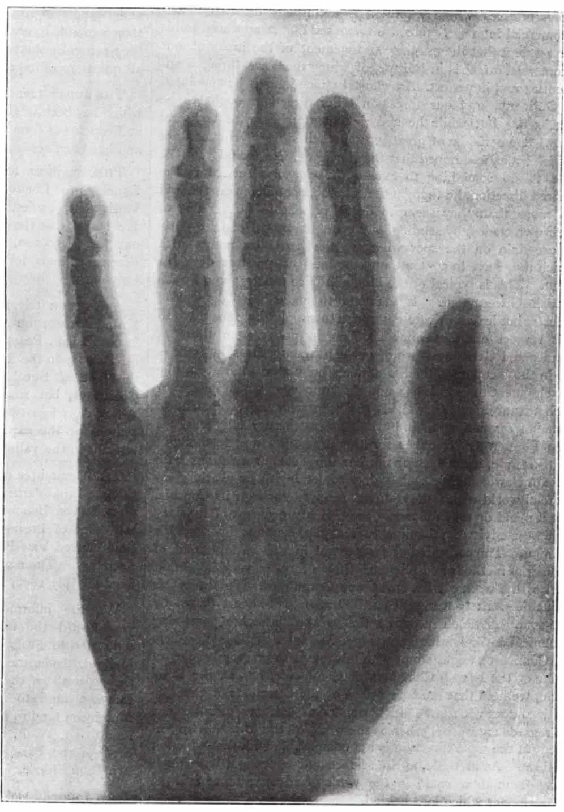

中文
中文A. A. C. Swinton
Editor’s Note
One of the most sobering things about this verification of Röntgen’s discovery of X-rays, less than a month after they were first reported, is that it shows how tepid the reception of great discoveries can be among scientific peers. Campbell-Swinton hints that the newspapers have been getting excited over a phenomenon that is not “entirely novel”. But that is because he somewhat misinterprets Röntgen’s results. Swinton insists on regarding the X-rays as “some portion of the kathode radiations”, and points out that cathode rays are already known to produce photographic images—missing Röntgen’s claim that his X-rays are not cathode rays at all. 中文
THE newspaper reports of Prof. Röntgen’s experiments have, during the past few days, excited considerable interest. The discovery does not appear, however, to be entirely novel, as it was noted by Hertz that metallic films are transparent to the kathode rays from a Crookes or Hittorf tube, and in Lenard’s researches, published about two years ago, it is distinctly pointed out that such rays will produce photographic impressions. Indeed, Lenard, employing a tube with an aluminium window, through which the kathode rays passed out with comparative ease, obtained photographic shadow images almost identical with those of Röntgen, through pieces of cardboard and aluminium interposed between the window and the photographic plate. 中文
Prof. Röntgen has, however, shown that this aluminium window is unnecessary, as some portion of the kathode radiations that are photographically active will pass through the glass walls of the tube. Further, he has extended the results obtained by Lenard in a manner that has impressed the popular imagination, while, perhaps most important of all, he has discovered the exceedingly curious fact that bone is so much less transparent to these radiations than flesh and muscle, that if a living human hand be interposed between a Crookes tube and a photographic plate, a shadow photograph can be obtained which shows all the outlines and joints of the bones most distinctly. 中文
Working upon the lines indicated in the telegrams from Vienna, recently published in the daily papers, I have, with the assistance of Mr. J. C. M. Stanton, repeated many of Prof. Röntgen’s experiments with entire success. According to one of our first experiments, an ordinary gelatinous bromide dry photographic plate was placed in an ordinary camera back. The wooden shutter of the back was kept closed, and upon it were placed miscellaneous articles such as coins, pieces of wood, carbon, ebonite, vulcanised fibre, aluminium, &c., all being quite opaque to ordinary light. Above was supported a Crookes tube, which was excited for some minutes. On development, shadows of all the articles placed on the slide were clearly visible, some being more opaque than others. Further experiments were tried with thin plates of aluminium or of black vulcanised fibre interposed between the objects to be photographed and the sensitive surface, this thin plate being used in place of the wood of the camera back. In this manner sharper shadow pictures were obtained. While most thick metal sheets appear to be entirely opaque to the radiations, aluminium appears to be relatively transparent. Ebonite, vulcanised fibre, carbon, wood, cardboard, leather and slate are all very transparent, while, on the other hand, glass is exceedingly opaque. Thin metal foils are moderately opaque, but not altogether so. 中文
As tending to the view that the radiations are more akin to ultraviolet than to infra-red light, it may be mentioned that a solution of alum in water is distinctly more transparent to them than a solution of iodine in bisulphide of carbon. 中文
So far as our own experiments go, it appears that, at any rate without very long exposures, a sufficiently active excitation of the Crookes tube is not obtained by direct connection to an ordinary Rhumkorff induction coil, even of a large size. So-called high frequency currents, however, appear to give good results, and our own experiments have been made with the tube excited by current obtained from the secondary circuit of a Tesla oil coil, through the primary of which were continuously discharged twelve half-gallon Leyden jars, charged by an alternating current of about 20,000 volts pressure, produced by a transformer with a spark-gap across its high-pressure terminals. 中文
For obtaining shadow photographs of inanimate objects, and for testing the relative transparency of different substances, the particular form of Crookes tube employed does not appear to greatly signify, though some forms are, we find, better than others. When, however, the human hand is to be photographed, and it is important to obtain sharp shadows of the bones, the particular form of tube used and its position relative to the hand and sensitive plate appear to be of great importance. So far, owing to the frequent destruction of the tubes, due to overheating of the terminals, we have not been able to ascertain exactly the best form and arrangement for this purpose, except that it appears desirable that the electrodes in the tube should consist of flat and not curved plates, and that these plates should be of small dimensions. 中文
The accompanying photograph of a living human hand (Fig. 1) was exposed for twenty minutes through an aluminium sheet 0.0075 in thickness, the Crookes tube, which was one of the kind containing some white phosphorescent material (probably sulphide of barium), being held vertically upside down, with its lowest point about two inches above the centre of the hand. 中文

Fig. 1. Photograph of a living human hand 中文
By substituting a thin sheet of black vulcanised fibre for the aluminium plate, we have since been able to reduce the exposure required to four minutes. Indeed with the aluminium plate, the twenty minutes’ exposure appears to have been longer than was necessary. Further, having regard to the great opacity of glass, it seems probable that where ordinary Crookes tubes are employed, a large proportion of the active radiations must be absorbed by the glass of the tube itself. If this is so, by the employment of a tube partly constructed of aluminium, as used by Lenard, the necessary length of exposure could be much reduced. 中文
(53, 276-277; 1896)